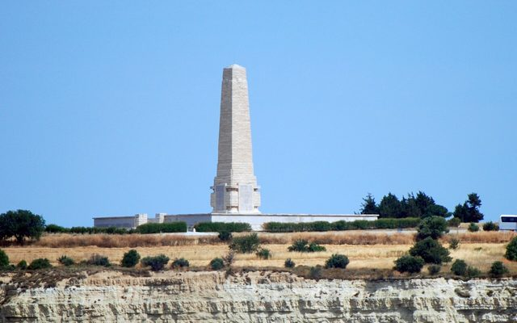

Home › Things to see, province by province › Çanakkale
The Kültür Varlıkları guide lists 19 places in Çanakkale: 10 museum, 8 archaeological site, 1 castle & historic building. Below you will find the highlights, a map and the full list.
⭐ Highlights

1 · Çanakkale · Archaeological siteTroy
Troy became the most famous city in world literature through Homer's Iliad.

2 · Çanakkale · Archaeological siteAssos Archaeological Site
Assos, above the village of Behramkale, crowns a volcanic hill overlooking the Gulf of Edremit and Lesbos.

3 · Çanakkale · MuseumTroy Museum
Troy Museum, at the entrance to Tevfikiye village near ancient Troy, stands out for its striking modern architecture: a cube rising from the ground, designed to evoke…
🗺 On the map
📍 All places (19)
Museum (10)
Troy MuseumMuseum Gelibolu Savaş MuseumMuseum
Gelibolu Savaş MuseumMuseum Kabatepe Tanıtım MerkeziMuseum
Kabatepe Tanıtım MerkeziMuseum Kilitbahir Kale MuseumMuseum
Kilitbahir Kale MuseumMuseum Namazgâh Tabyası MuseumMuseum
Namazgâh Tabyası MuseumMuseum Çanakkale Deniz MuseumMuseumAdatepe Zeytinyağı MuseumMuseumHamidiye Tabyası and Çanakkale Savaşları Tarihi MuseumMuseumÇanakkale Destanı Tanıtım MerkeziMuseumÇanakkale Hilal-i Ahmer Canlandırma AlanıMuseum
Çanakkale Deniz MuseumMuseumAdatepe Zeytinyağı MuseumMuseumHamidiye Tabyası and Çanakkale Savaşları Tarihi MuseumMuseumÇanakkale Destanı Tanıtım MerkeziMuseumÇanakkale Hilal-i Ahmer Canlandırma AlanıMuseumArchaeological site (8)
TroyArchaeological site · UNESCOAssos Archaeological SiteArchaeological site Alexandria Troas Archaeological SiteArchaeological site
Alexandria Troas Archaeological SiteArchaeological site Apollon Smintheion Archaeological SiteArchaeological site
Apollon Smintheion Archaeological SiteArchaeological site Gelibolu Tarihi Alanı (Çanakkale Savaşları)Archaeological site
Gelibolu Tarihi Alanı (Çanakkale Savaşları)Archaeological site
Helles Anıtı (Seddülbahir)Archaeological site Ancient City of ParionArchaeological siteAncient City of NeandreiaArchaeological site
Ancient City of ParionArchaeological siteAncient City of NeandreiaArchaeological site